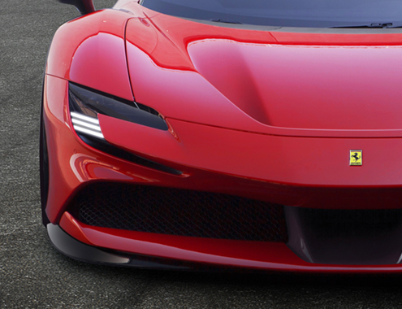
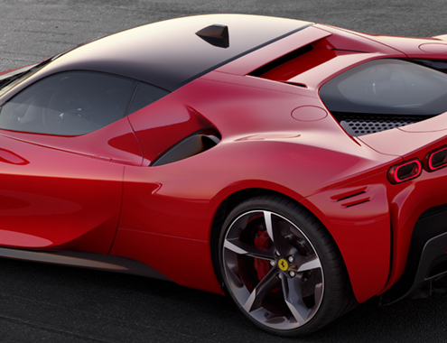
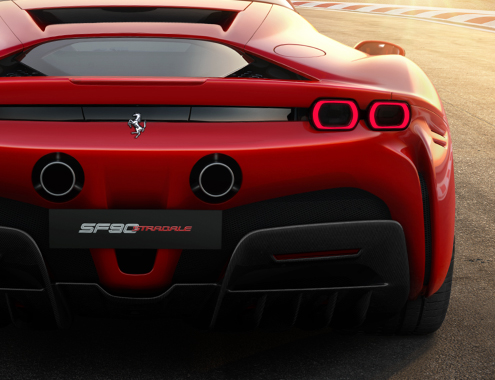

Ferrari's Special Version cars push the performance of its production models to new extremes. Some, such as the 488 Pista and 812 Competizione, have earned a rightful place in the Prancing Horse's recent pantheon. Ferrari's 'XX Programme', on the other hand, offers a select group of expert client drivers extreme cars that are not homologated for the road, to drive on the very limit on the track. One such model is the FXX-K EVO. Ferrari has now drawn on these two different spheres of experience to create a Special Version that draws on the programme's concepts to make it effectively a road-legal XX: the SF90 XX Stradale.
Another signature solution is the headlights which hail a move away from the L-shaped look, to a slender slit design integrated with the brake air intakes resulting in a characteristic C-shape which lends the front of the car an original and futuristic appeal.
In an absolute first for a Ferrari, the SF90 Stradale uses matrix LED headlight technology to improve visibility in all driving conditions thanks to active beam control.
More compact overhangs (the rear one is shorter than the front one in particular) and the frontward-shift of the cabin have created a cab-forward-type architecture which emphasises the fact that the engine is mid-mounted. A very low centre of gravity has also allowed the designers to lower the cabin area by 20 mm.
Combined with a more curved windshield, slender A-posts and a wide track, this creates a beautifully proportioned car with sleeker volumes. The compact bubble-shaped cabin has an aeronautical cockpit feel and the fact that it has been shifted so far forward is further emphasised by the geometry of the two body-coloured rear flying buttresses that enclose the rear.
The tail lights have also evolved quite radically from Ferrari's iconic round shape. The eye-catching, more horizontal luminous rings create a more horizontal perception of the tail lights which in turn visually lowers the height of the tail.
wheels